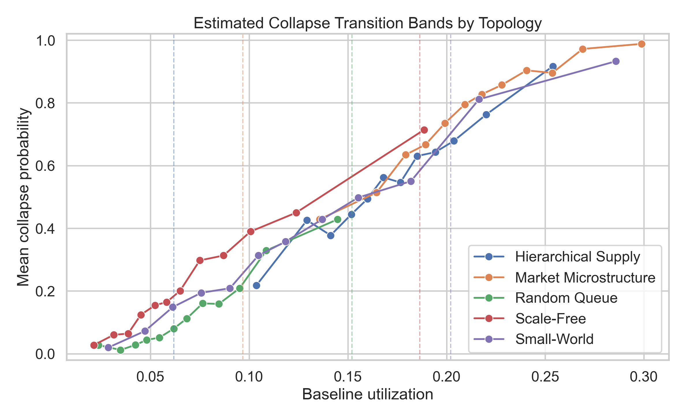
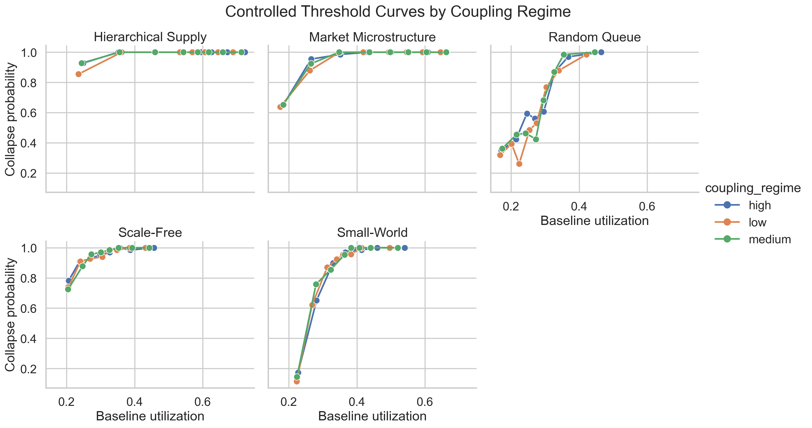
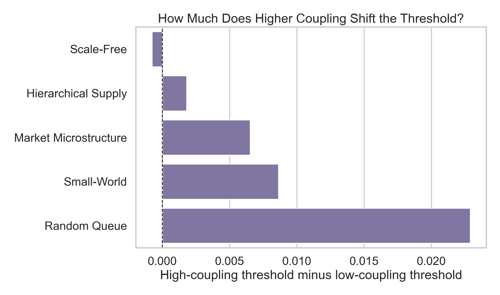

Collapse thresholds are primarily utilization-led.
The flagship study showed a shared transition band across five topology families. The controlled follow-up then showed that coupling mainly trims failure margin rather than relocating the threshold by much.
Flagship evidence
- 5,000 synthetic systems across five topology families
- Shared collapse transition band around baseline utilization 0.10 to 0.19
- Median estimated threshold across families: 0.152
- Variance growth and recovery lag generalized as early-warning signals
- Heavy-tailed cascades, with lognormal fitting better than strict power law
Follow-up refinement
- 2,700 fixed-size synthetic systems plus 144 healthcare variants
- Mean high-versus-low coupling threshold shift: 0.008 utilization points
- Largest absolute threshold shift: 0.023
- Higher coupling reduced shock margin by about 39.2%
- Healthcare validation showed the same cliff structure in arrival-multiplier space

Shared transition band
The strongest flagship result is the overlay itself: different network families cross the cliff at different exact points, but they still cluster inside the same narrow regime.

Per-topology critical points
The topology differences are real, but they refine the claim rather than destroy it. The shared regime survives family-level variation.

Controlled threshold sweep
When system size is fixed and utilization plus coupling are swept directly, the threshold remains utilization-led.

Coupling moves the threshold only modestly
The follow-up weakens any stronger claim that coupling alone sets the universal threshold.

Coupling compresses robustness
The real operational effect of tighter coupling is not a dramatic threshold relocation. It is a narrower buffer to failure once a system is near the cliff.
Strongest defensible takeaway
The evidence supports a more careful claim than "one universal threshold rules everything." StressLab found a shared utilization-led collapse regime across domains. Coupling is important, but mostly because it makes near-threshold systems less forgiving.
That is useful both scientifically and operationally: the threshold tells you where the cliff is, while coupling tells you how little disturbance it may take to fall over it.